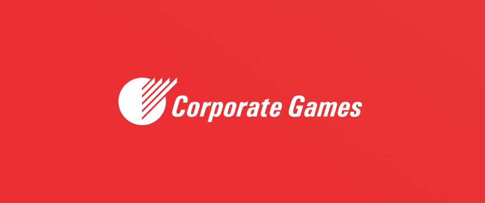

Visão geral
O Corporate Games já organizava torneios corporativos em diferentes regiões do mundo, mas contava com um sistema legado. Para modernizar essa operação, eles buscaram a MeshMe para trazer sua tecnologia aos torneios que já organizavam. Foi nesse momento que assumi o papel de Product Manager, respondendo pela gestão dos sistemas web, usado pelo gestor, e app, usado pelo participante, com atuação direta na parte web da plataforma.
Problema
Fazer um sistema funcionar em diversas regiões esbarra em barreiras de língua, regras, modalidades e organizações diferentes. O principal desafio era um sistema legado com etapas extras para fluxos simples, que precisava ser simplificado ao máximo para atender tanto a sede, no Reino Unido, quanto torneios em outros países, como México e demais regiões. Outro ponto de atenção foram as regras de negócio já consolidadas em algumas regiões, como as formas de contabilizar pontos, a distribuição de equipes e a organização do chaveamento dos torneios, que exigiram entender a fundo cada regra local para conseguir traduzi-la corretamente para dentro do sistema.
Fase de Descoberta
A investigação apontou a necessidade de separar claramente os pontos de acesso do
gestor e do participante, mantendo os dois sistemas conectados: o gestor organiza
horários, times e inscrições pela web, enquanto o participante acompanha tudo pelo
app.
• Público-alvo: Empresas e organizações do setor corporativo, com torneios realizados na sede do Reino Unido e em outros países, como México e Brasil.
Direção da Solução
A solução foi estruturada em dois pontos de acesso conectados: um painel web para gestão e um app para os participantes do torneio.
• Painel Web (gestor): organização de torneios, horários, times e inscrições.
• App (participante): acesso simplificado às informações do torneio em que está inscrito.
UI Design
O design foi um processo construído em conjunto com o time, equilibrando inovação com a familiaridade de um público mais experiente, já acostumado à forma como organizava os torneios.

• Check-in e credenciais: geração automática da credencial a partir dos dados informados pelo usuário, com exportação em PDF para impressão física e versão online.
• Notificações: avisos de mudança de local e horário dos jogos, além da pontuação das equipes em tempo real.
• Gamificação: destaque para a empresa vencedora, ranking de medalhas e desempenho por modalidade.

Resultados
• Sistema utilizado por grandes empresas, como Ford, BNP, Puma e Toshiba.
• Torneios realizados em mais de 5 países, incluindo o Brasil.
• Mais de 10 grandes torneios realizados até o momento.
• Mais de 3.500 usuários ativos por mês.